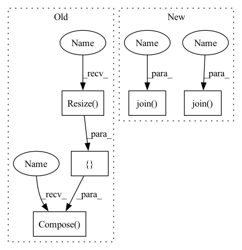

Pattern ID :4487
Before Change
>>> inputs, classes = next(iter(dataloaders[TRAIN]))
def __init__(self, root="/home/data/02_SSD4TB/suzy/datasets/public/chest-xray/", split="train", transform=None):
transform = transforms.Compose([
transforms.Resize( 256) ,
transforms.CenterCrop(224),
transforms.ToTensor(),
transforms.Normalize([0.485, 0.456, 0.406], [0.229, 0.224, 0.225]))
super(ChestXray, self).__init__(
root=os.path.join(root, split), transform=transform)
def __getitem__(self, index):After Change
if download:
download_datasets(tag, path=root)
extract_zip(os.path.join(root , tag+".zip") , os.path.join(root, tag))
self.target_transform = target_transform
if transform is None:
self.transform = self.get_train_transform(shape)
if train:
train_path = os.path.join(
root , tag, "chest_xray", "train")
super(ChestXray, self).__init__(
root=train_path, transform=transform)
def __getitem__(self, index):In pattern: SUPERPATTERN
Frequency: 3
Non-data size: 5
Instances Fragment ID: 16361753
Project Name: tuttelikz/farabio
Commit Name: a535350f613f18fde69848c346695dc34e1332f8
Time: 2021-04-07
Author: s.askaruly@gmail.com
File Name: farabio/data/biodatasets.py
M Class Name: ChestXray
N Class Name: ChestXray
M Method Name: __init__(7)
N Method Name: __init__(4)
M Parent Class: ImageFolder
N Parent Class: ImageFolder
M File Name: farabio/data/biodatasets.py
N File Name: farabio/data/biodatasets.py
M Start Line: 192
M End Line: 199
N Start Line: 188
N End Line: 206
Before Change
transforms.Normalize((0.485, 0.456, 0.406), (0.229, 0.224, 0.225))
])
else:
self.transform = transforms.Compose([ lambda x: Image.open(x).convert("RGB"),
transforms.Resize( (self.resize, self.resize)) ,
transforms.ToTensor(),
transforms.Normalize((0.485, 0.456, 0.406), (0.229, 0.224, 0.225)))
self.path = os.path.join(root, "images") // image path
csvdata = self.loadCSV(os.path.join(root, mode + ".csv")) // csv path
self.data = []After Change
mode, batchsz, n_way, k_shot, k_query))
// load subgraph list
with open(os.path.join( root, path_s) , "rb") as f:
subgraph_list = pickle.load(f)
with open(os.path.join( root, path_l) , "rb") as f:
subgraph2label = pickle.load(f)
self.subgraph2label = subgraph2label Fragment ID: 16361752
Project Name: mims-harvard/g-meta
Commit Name: aed3468b5f71c857f788169b34b97a411628930b
Time: 2020-03-02
Author: cosamhkx@gmail.com
File Name: src/subgraph_data_processing.py
M Class Name: Subgraphs
N Class Name: Subgraphs
M Method Name: __init__(9)
N Method Name: __init__(9)
M Parent Class: Dataset
N Parent Class: Dataset
M File Name: src/subgraph_data_processing.py
N File Name: src/subgraph_data_processing.py
M Start Line: 44
M End Line: 70
N Start Line: 42
N End Line: 53
Before Change
>>> inputs, classes = next(iter(dataloaders[TRAIN]))
def __init__(self, root="/home/data/02_SSD4TB/suzy/datasets/public/chest-xray/", split="train", transform=None):
transform = transforms.Compose([
transforms.Resize( 256) ,
transforms.CenterCrop(224),
transforms.ToTensor(),
transforms.Normalize([0.485, 0.456, 0.406], [0.229, 0.224, 0.225]))
super(ChestXray, self).__init__(
root=os.path.join(root, split), transform=transform)
def __getitem__(self, index):After Change
if download:
download_datasets(tag, path=root)
extract_zip(os.path.join(root, tag+".zip"), os.path.join( root, tag) )
self.target_transform = target_transform
if transform is None:
self.transform = self.get_train_transform(shape)
if train:
train_path = os.path.join(
root, tag, "chest_xray", "train")
super(ChestXray, self).__init__(
root=train_path, transform=transform)
def __getitem__(self, index): Fragment ID: 16361755
Project Name: tuttelikz/farabio
Commit Name: a535350f613f18fde69848c346695dc34e1332f8
Time: 2021-04-07
Author: s.askaruly@gmail.com
File Name: farabio/data/biodatasets.py
M Class Name: ChestXray
N Class Name: ChestXray
M Method Name: __init__(7)
N Method Name: __init__(4)
M Parent Class: ImageFolder
N Parent Class: ImageFolder
M File Name: farabio/data/biodatasets.py
N File Name: farabio/data/biodatasets.py
M Start Line: 192
M End Line: 199
N Start Line: 188
N End Line: 206
Before Change
transforms.RandomHorizontalFlip(),
])
self.lr_transforms = transforms.Compose([
transforms.Resize( [image_size // upscale_factor, image_size // upscale_factor], interpolation=IMode.BICUBIC, antialias=True) ,
transforms.Resize([image_size, image_size], interpolation=IMode.BICUBIC, antialias=True))
def __getitem__(self, batch_index: int) -> [Tensor, Tensor]:
// Read a batch of image data
image = Image.open(self.filenames[batch_index])After Change
super(ImageDataset, self).__init__()
self.filenames = [os.path.join(dataroot, x) for x in os.listdir(dataroot)]
lr_dir_path = os.path.join( dataroot, "inputs")
hr_dir_path = os.path.join( dataroot, "target")
self.filenames = os.listdir(lr_dir_path)
self.lr_filenames = [os.path.join(lr_dir_path, x) for x in self.filenames]
self.hr_filenames = [os.path.join(hr_dir_path, x) for x in self.filenames]
Fragment ID: 16361757
Project Name: lornatang/vdsr-pytorch
Commit Name: 47c9ac3ddc26e70b6d89e150b009aac2e553ee88
Time: 2021-11-22
Author: liuchangyu1111@gmail.com
File Name: dataset.py
M Class Name: ImageDataset
N Class Name: ImageDataset
M Method Name: __init__(2)
N Method Name: __init__(5)
M Parent Class: Dataset
N Parent Class: Dataset
M File Name: dataset.py
N File Name: dataset.py
M Start Line: 42
M End Line: 62
N Start Line: 36
N End Line: 44